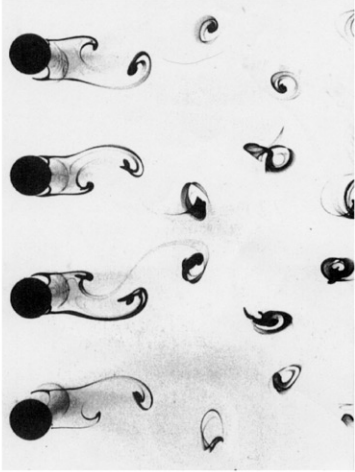
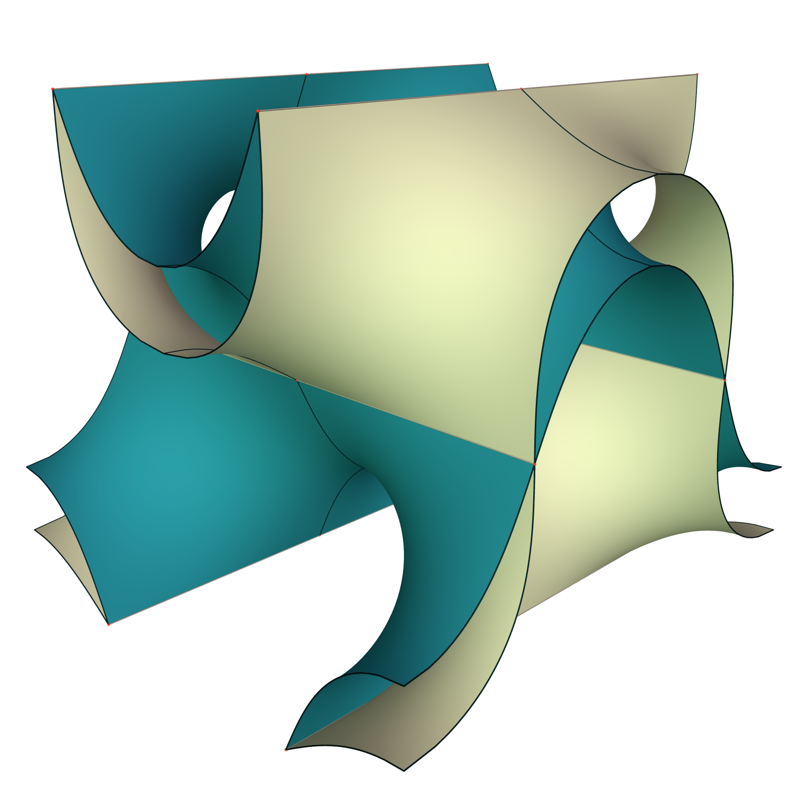
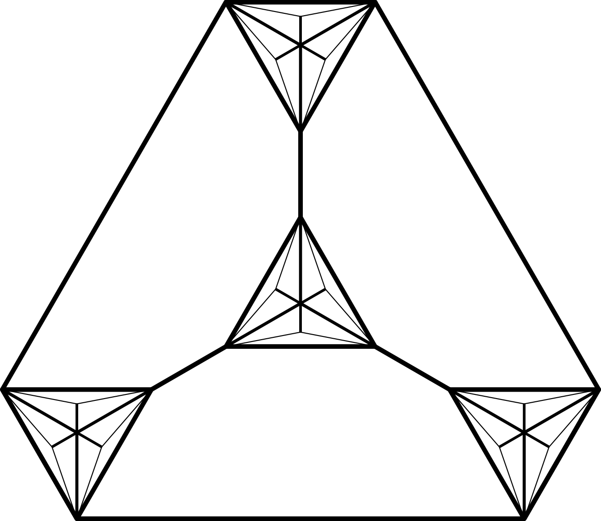
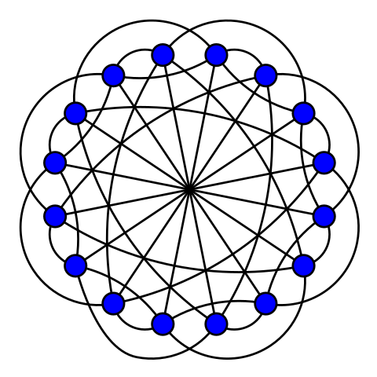
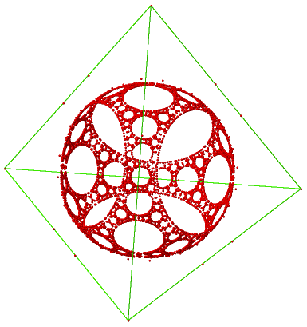
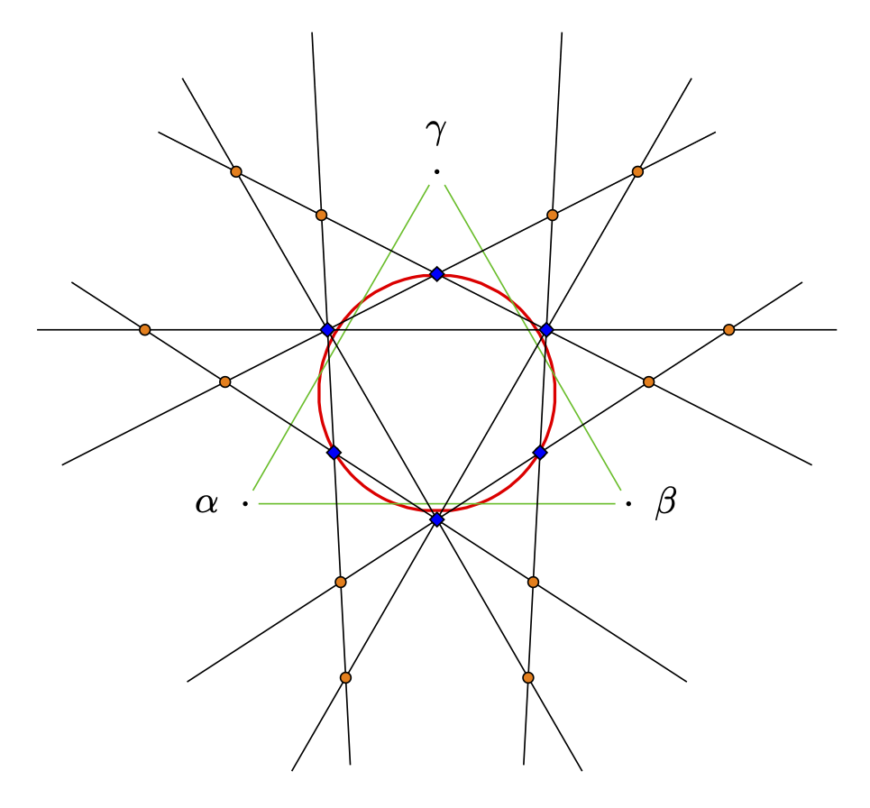
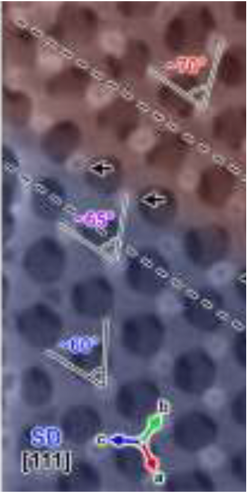

Assistant Professor,
Institute of Mathematical Sciences,
ShanghaiTech University,
393 Middle Huaxia Road,
Pudong, Shanghai, 201210, China
Tel: +86 21 20680940
Mail: chenhao5@shanghaitech.edu.cn
Mail: hao.chen.math@gmail.com
Web: https://dr-how.github.io/
I’m an Assistant Professor at the Institute of Mathematical
Sciences at ShanghaiTech
University.
I worked at the Discrete
Differential Geometry Lab of the Georg-August-Univerität
Göttingen, funded by DFG individual grant under the project “Defects in Triply
Periodic Minimal Surfaces” (Projekt number 398759432). There, I get
my Habilitation in June 2021. Before that, I worked at or visited MSRI
(Berkeley), Luxembourg, St Andrews, Eindhoven, and FU Berlin.
I get my PhD at the Free University of Berlin in discrete geometry.
My interest in this direction include polytopes, sphere packings and so
on, preferably in non-Euclidean and high dimensional spaces. I was
recently habilitated at the University of Göttingen for differential
geometric works, mainly on minimal surfaces and their applications in
material sciences.
See my CV and research statement, also my profile
pages on arXiv, Google
Scholar, MathSciNet,
ORCID, Scopus,
and publons.
Selected Publications
Minimal surfaces

|
Gluing Karcher-Scherk saddle towers II: Singly periodic
minimal surfaces 
to appear in Comm. Anal. Geom. Gluing Karcher-Scherk saddle towers I: Triply periodic
minimal surfaces
with Martin
Traizet.
We glue saddle towers into minimal surfaces without any assumption on
the symmetry. In particular, we reveal a subtle vertical interaction
between the tower, which was not perceived in previous constructions.
This is the first paper presenting such our construction. We discovered
many new triply and singly periodic minimal surfaces. For singly
periodic ones, we address the technical issue of embeddedness when
Scherk ends are initially parallel. Fig. on the left from
Matthias
Weber’s repository.
|

|
- Catenoid
limits of singly periodic minimal surfaces with Scherk-type
ends
in Pacific J. Math.
with Peter Connor and Kevin
Li.
We reproduce the result in the PhD thesis of Kevin Li. More
specifically, we construct families of embedded, singly periodic
Karcher–Scherk saddle towers that look like parallel planes connected by
small catenoid necks.
|
|

|
- Helicoids
and vortices
in Proc. R. Soc. A.
with Daniel Freese.
We show that the interaction between helicoids during a gluing
construction is the same as the interaction between point vortices in 2D
fluids. As a consequence, we obtained many new examples of minimal
surfaces and some new examples of vortex crystals. Photo on the left is
by Toshio Kobayashi 小林敏雄 in the photo album 流れ―写真集. It
corresponds to the rPD minimal surface.
|

|
- Existence of
the rhombohedral and tetragonal deformation families of the
gyroid
in Indiana Univ. Math. J.
We prove the existence of two 1-parameter families discovered in the
1990’s, namely the tetragonal (tG) and rhombohedral (rGL) deformation
families of the gyroid. The proof defines Weierstrass data in terms of
Jacobi sn function on flat tori that are not necessarily rectangular.
Then we notice twisted catenoids bounded by curved squares and
triangles, which allow us to propose a period condition following an
intuition of Gross-Brauckmann. Another key observation is that CLP
surfaces can be seen as a special gyrating surface.
|

|
- Stacking
disorder in periodic minimal surfaces
in SIAM J. Math. Anal.
with Martin
Traizet.
We fonstruct a rich variety of doubly periodic minimal surfaces of
infinite genus. They lift to minimal surfaces in the Euclidean space
that are periodic in two independent horizontal directions, but
non-periodic in the vertical direction. In the language of
crystallography, our examples should be considered as disordered
stacking of catenoid necks. The TPMS twinning is then just a special
case.
|
|

|
An
orthorhombic deformation family of Schwarz’ H surfaces
in Trans. Amer. Math. Soc.
with Matthias
Weber. A new
deformation family of Schwarz’ D surface
in Trans. Amer. Math. Soc.
with Matthias
Weber.
These two papers show, respectively, two new 2-dimensional families of
triply periodic minimal surfaces of genus three, which can be seen as
orthorhombic deformations of Schwarz’ D and H surfaces. These families
are exceptional since they do not belong to Meeks’ 5-dimensional family,
yet the 1-dimensional “intersections” with Meeks family exhibit
singularities in the moduli space of triply periodic minimal surfaces of
genus three. Picture on the left compares a new surface with the
classical Schwarz tD surface. See
Matthias
blog post for a gentle introduction.
|

|
- Minimal
Twin Surfaces
in Exp. Math.
We report some minimal surfaces that can be seen as copies of a triply
periodic minimal surface (TPMS) related by reflections in parallel
mirrors. We call them minimal twin surfaces for the resemblance with
twin crystal. Brakke’s Surface Evolver is employed to construct
twinnings of various classical TPMS, including Schwarz’ Primitive (P)
and Diamond (D) surfaces, their rhombohedral deformations (rPD), and
Schoen’s Gyroid (G) surface. Our numerical results provide strong
evidences for the mathematical existence of D twins and G twins, which
are recently observed in experiment by material scientists. For rPD
twins, we develop a good understanding, by noticing examples previously
constructed by [Traizet 08] and [Fujimori and Weber 09]. Our knowledge
on G twins is, by contrast, very limited. Nevertheless, our experiments
lead to new cubic polyhedral models for the D and G surfaces, inspired
by which we speculate new TPMS deformations in the framework of
Traizet.
|
Discrete Geometry

|
- Weakly
Inscribed Polyhedra
in Trans. Amer. Math. Soc. Ser. B
with Jean-Marc
Schlenker.
We study convex polyhedra in the projective 3-space with all their
vertices on a sphere. We do not require, in particular, that the
polyhedra lie in the interior of the sphere, hence the term “weakly
inscribed”. Such polyhedra can be interpreted as ideal polyhedra, if we
regard the projective space as a combination of the hyperbolic space and
the de Sitter space, with the sphere as the common ideal boundary. We
have three main results: (1) the 1-skeleta of weakly inscribed polyhedra
are characterized in a purely combinatorial way, (2) the exterior
dihedral angles are characterized by linear programming, and (3) we also
describe the hyperbolic-de Sitter structure induced on the boundary of
weakly inscribed polyhedra.
|

|
- Selectively
Balancing Unit Vectors
in Combinatorica
with Aart Blokhuis.
A set U of unit vectors is selectively balancing if one can find two
disjoint subsets U+ and U-, not both empty, such that the Euclidean
distance between the sum of U+ and the sum of U- is smaller than 1. We
prove that the minimum number of unit vectors that guarantee a
selectively balancing set in ℝ n is asymptotically nlogn/2.
|
|

|
- Scribability
problems for polytopes
in European J. Combin.
with Arnau
Padrol.
In this paper we study various scribability problems for polytopes. We
begin with the classical k-scribability problem proposed by Steiner and
generalized by Schulte, which asks about the existence of d-polytopes
that cannot be realized with all k-faces tangent to a sphere. We answer
this problem for stacked and cyclic polytopes for all values of d and k.
We then continue with the weak scribability problem proposed by
Gr"unbaum and Shephard, for which we complete the work of Schulte by
presenting non weakly circumscribable 3-polytopes. Finally, we propose
new (i,j)-scribability problems, in a strong and a weak version, which
generalize the classical ones. They ask about the existence of
d-polytopes that can not be realized with all their i-faces “avoiding”
the sphere and all their j-faces “cutting” the sphere. We provide such
examples for all the cases where j−i≤d−3.
|
|

|
- Ball
packings with high chromatic numbers from strongly regular
graphs
in Discrete Math.
Inspired by Bondarenko’s counter-example to Borsuk’s conjecture, we
notice some strongly regular graphs that provide examples of ball
packings whose chromatic numbers are significantly higher than the
dimensions. In particular, from generalized quadrangles we obtain unit
ball packings in dimension q3−q2+q with chromatic number q3+1, where q
is a prime power. This improves the previous lower bound for the
chromatic number of ball packings. (Fig. on the left from
Wikipedia)
|
|

|
Even More
Infinite Ball Packings from Lorentzian Root Systems
in Electron. J. Combin. Lorentzian
Coxeter systems and Boyd-Maxwell ball packings
in Geom. Dedicata
with Jean-Philippe
Labbé
These two papers generalize the infinite ball packings generated by
Coxeter groups proposed by Boyd (1974) and Maxwell (1983). It is
motivated by recent studies on infinite root systems. It turns out that
the accumulation points of the roots in the projective space leave a
pattern of spheres on the light cone. We first noticed a connection
between this pattern and the Boyd-Maxwell packings, then extend this
connection to a more general notion of root system. In particular, we
enumerate all the Coxeter groups of “level 2”, which are all the Coxeter
groups that generate a ball packing. See also the
Shadertoy
implementation of Boyd-Maxwell packings by
@neozhaoliang.
|
|

|
- Limit Directions
for Lorentzian Coxeter Systems
in Groups Geom. Dyn.
with Jean-Philippe
Labbé
Every Coxeter group admits a geometric representation as a group
generated by reflections in a real vector space. In the projective
representation space, limit directions are limits of injective sequences
in the orbit of some base point. Limit roots are limit directions that
can be obtained starting from simple roots. In this article, we study
the limit directions arising from any point when the representation
space is a Lorentz space. In particular, we characterize the light-like
limit directions using eigenvectors of infinite-order elements. This
provides a spectral perspective on limit roots, allowing for efficient
computations. Moreover, we describe the space-like limit directions in
terms of the projective Coxeter arrangement.
|

|
- Apollonian Ball
Packings and Stacked Polytopes
in Discrete Comput. Geom.
We investigate in this paper the relation between Apollonian d-ball
packings and stacked (d+1)-polytopes for dimension d≥3 . For d=3, the
relation is fully described: we prove that the 1-skeleton of a stacked
4-polytope is the tangency graph of an Apollonian 3-ball packing if and
only if there is no six 4-cliques sharing a 3-clique. For higher
dimension, we have some partial results. (Fig. on the left from
Wikipedia)
|
Physics
|

|
Direct
imaging of the structural transition and interconversion of macroporous
bicontinuous diamond-surface structure
in Micropor. Mesopor. Mat.
with Chao Bao, Shun’ai Che, Lu Han Self-Assembly of
Single Diamond Surface Networks
in Angew. Chem. Int.
with Qingqing Sheng, Wenting Mao, Congcong Cui, Shun’ai Che, Lu
Han
The first paper reports intermediate structures during the transition
between lamellar phases and bicontinuous diamond phases. The second
paper reports a coexistence of single diamond and single gyroid
structures. I contributed in both with explanations of the experimental
observations inspired by the node-opening technique in differential
geometry.
|

|
- Competition
brings out the best: modelling the frustration between curvature energy
and chain stretching energy of lyotropic liquid crystals in bicontinuous
cubic phases
in Interface Focus
with Chenyu
Jin.
It is commonly considered that the frustration between the curvature
energy and the chain stretching energy plays an important role in the
formation of lyotropic liquid crystals in bicontinuous cubic phases.
Theoretic and numeric calculations were performed for two extreme cases:
parallel surfaces eliminate the variance of the chain length; constant
mean curvature surfaces eliminate the variance of the mean curvature. We
have implemented a model with Brakke’s Surface Evolver which allows a
competition between the two variances. The result shows a compromise of
the two limiting geometries. With data from real systems, we are able to
recover the gyroid–diamond–primitive phase sequence which was observed
in experiments.
|
|
|
- Crystal
twinning of bicontinuous cubic structures
in IUCrJ
with Lu Han, Nobuhisa Fujita, Chenyu Jin, Osamu Terasaki, Shun’ai
Che.
A collaboration with physicists. We performed an in-depth analysis of
the twinning structures observed in experiments.
|

|
- Comment on “Analysis of hospital traffic and search engine
data in Wuhan China indicates early disease activity in the Fall of
2019” by Nsoesie et al. DASH HAL
with Ziming Du, Yu Kang, Zhenyu Lin, Zhenjun Ma
This is our attempt to fight against the trend of problematic studies
being announced by press release. In this case, it is a Harvard study
that “analyses” satellite images of hospital parking lots and internet
search trends, and suggests that the COVID-19 outbreak started in Wuhan,
China in August 2019, four months earlier than documented. We identify
many problems in this study, including but not limited to: inappropriate
and insufficient data, misuse and misinterpretation of statistical
methods, and cherry-picking internet search terms. We also reflect on
scientific publishing in a time of public emergency.
|